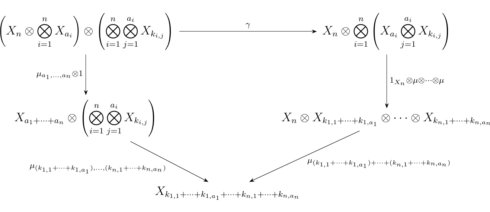
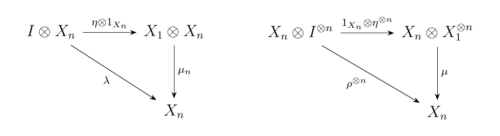
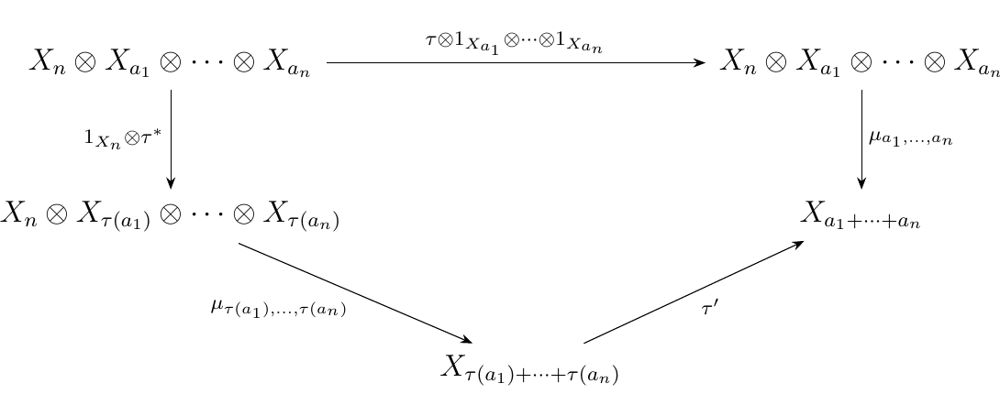
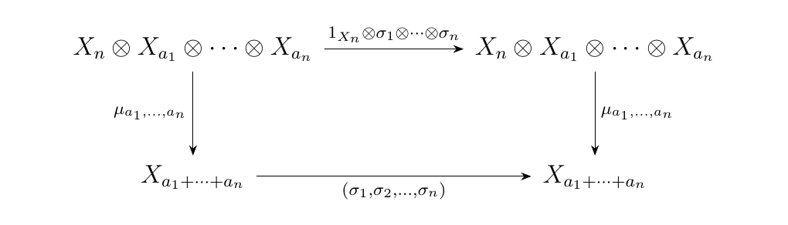

9.2. General Operads in Symmetric Monoidal Categories
Every time we find ourselves working in Set, we should feel a great deal of shame and embarrassment. Before anyone catches us, we can atone for our sins by drawing diagrams that avoid specific reference to the element of the sets, thereby transitioning our work to an arbitrary category. Given our previous work, we can do this; but what were the main ingredients? Note that we basically only needed the properties of Set and its cartesian product. Given this, and the fact that Set is symmetric monoidal given the cartesian product, we can largely generalize our previous work to arbitrary symmetric monoidal categories.
Let \((\cc, \otimes, I)\) be a symmetric monoidal category. A (symmetric) operad \(X\) over \(\cc\) is a family of objects \(\{X_n\}_{n \in \mathbb{N}}\), in \(\cc\), where each \(X_n\) has a group action by \(S_n\) and with
- 1. A unit morphism \(\eta: I \to X_1\)
- 2. For each \(n \in \mathbb{N}\) and \(a_i \in \mathbb{N}\) where \(i = 1, 2, \dots, n\), a composition morphism
subject to the associativity, identity, and equivariance axioms outlined below.
- (OP1) Associativity. Let \(n \ge 0\) and choose \(a_i \ge 0\) for \(i = 1,2, \dots, n\). Further, for each \(a_i\), choose \(k_{i,j} \ge 0\) for \(j = 1, 2, \dots, a_i\). Let \(\gamma\) be the isomorphism which rearranges the factors of the tensor product as below:
Then we demand that the diagram below commutes.
 * (OP2) Identity. Letting \(A\) be an arbitrary object of \(\cc\), let \(\lambda: I \otimes A \isomarrow A\) and \(\rho: A \otimes I \isomarrow A\) as the left and right unitors in our symmetric monoidal category. Then the diagrams below must hold for all \(n \ge 0\).
 * (OP3) Equivariance 1. Let \(\tau \in S_n\), and let \(\tau^*\) be the isomorphism \(\tau^*: X_{a_1} \otimes \cdots \otimes X_{a_n} \isomarrow X_{\tau(a_1)} \otimes \cdots \otimes X_{\tau(a_n)}\) and by abuse of notation denote \(\tau\) as the morphism \(\tau: X_n \to X_n\) which is given by the group action. Then the diagram below must commute.
 Here, \(\tau'\) is the block permutation described below:
\begin{gather} (\overbrace{\textcolor{Red}{1, 2, \dots, a_1}}^{\text{1st block}}, \dots, \overbrace{\textcolor{Green}{a_1 + \cdots + a_i+1, \dots a_1 + \cdots + a_{i+1}}}^{i\text{-th block}}, \dots \overbrace{\textcolor{RoyalBlue}{a_1 + \cdots + a_{n-1}+ 1, \dots, a_1 + \cdots + a_n}}^{n\text{-th block}})\ \mapsto\ (\dots, \overbrace{\textcolor{Red}{1, 2, \dots, a_1}}^{\tau(1)\text{-th block}}, \dots , \overbrace{\textcolor{Green}{a_1 + \cdots + a_i+1, \dots, a_1 + \cdots + a_{i+1}}}^{\tau(i)\text{-th block}}, \dots , \overbrace{\textcolor{RoyalBlue}{a_1 + \cdots + a_{n-1}+1, \dots, a_1 + \cdots + a_{n}}}^{\tau(n)\text{-th block}}, \dots ). \end{gather} * (OP4) Equivariance 2. Let \(\sigma_i \in S_{a_i}\) for \(i = 1, 2, \dots, n\). By abuse of notation, denote \(\sigma_i: X_{a_i} \to X_{a_i}\) to be the map given by the group action. Then we have that
 where \((\sigma_1, \sigma_2, \dots, \sigma_n)\) is the permutation in \(S_{a_1 + \cdots + a_n}\) defined as below.
\begin{gather*} (\overbrace{\textcolor{Red}{1, 2, \dots, a_1}}^{\text{1st block}} ,\dots, \overbrace{\textcolor{RoyalBlue}{a_1 + \cdots + a_{n-1}+ 1,, \dots, a_1 + \cdots + a_{n-1}a_n}}^{n\text{-th block}} ) \ \mapsto\ (\underbrace{\sigma_1(\textcolor{Red}{1}), \sigma_1(\textcolor{Red}{2}), \dots, \sigma_1(\textcolor{Red}{a_1})}_{\text{1st block}}, \dots,
\underbrace{\textcolor{RoyalBlue}{a_1 + \cdots + a_{n-1}+} \sigma_n(\textcolor{RoyalBlue}{1}), \dots, \textcolor{RoyalBlue}{a_1 + \cdots + a_{n-1}+}\sigma_n(\textcolor{RoyalBlue}{a_n}) }_{n\text{-th block}} ) \end{gather*}
As before, we can create an endomorphism operad. That is, if we let \(\cc\) be a symmetric monoidal category, then we can let \(\aend_A(n) = \hom_{\cc}(A^{\otimes n}, A)\). Then \(u: I \to \hom_{\cc}(X, X)\) is defined to be the unique map to the identity. Given \(f \in \aend_A(n)\) and \(g_i \in \aend_A(a_i)\) where \(a_i \in \mathbb{N}\) for \(i = 1,2, \dots, n\), then we define our composition pointwise:
Finally, given \(\sigma \in S_n\), we can define a group action by assigning \(f \cdot \sigma\) to the morphism which rearranges the positioning of \(A^{\otimes n}\) according to the permutation \(\sigma\). With these hypotheses one can check that the axioms of an operad are satisfied as we did in the previous section when \(\cc = **Set**\).